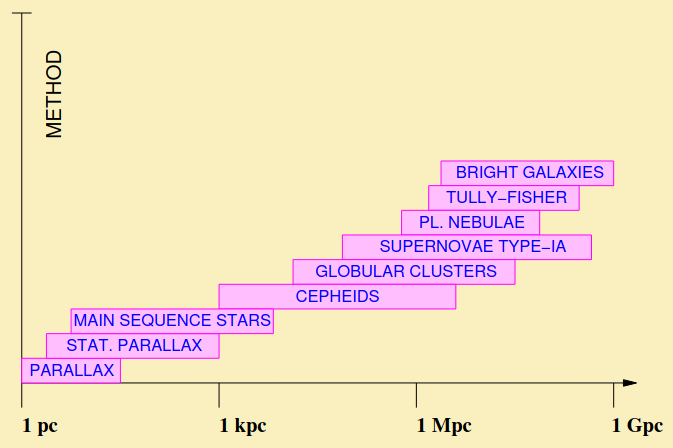
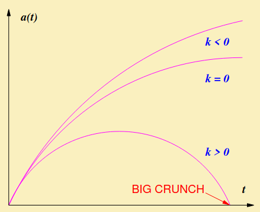
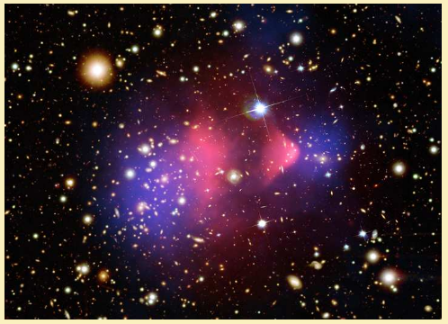

Cosmic Distance Ladder: A sequence of techniques for the estimation of distances of celestial bodies used to chart the observable Universe. Each technique in the sequence corresponds to a range of distances, greater than but overlapping with the previous technique in the sequence.
The parallax method is triangulation, using the diameter of the Earth's orbit as a baseline.
We then use the formula \[D=d\cot\phi\approx d/\phi\] ...where \(D\) is the distance to the source, \(d\) is the radius of Earths orbit (\(d\equiv 1\textrm{AU}\)), and \(\phi\) is the parallax (in radians).
Parallax: Half of the apparent angular displacement of a source (star) on the celestial sphere per semester
Celestial sphere: An imaginary sphere of indefinite but very large radius, where the images of distant sources (stars) are projected.
Parsec (pc): The distance of a source which has parallax equal to unity in arc-seconds. \[1\;\textrm{pc}\equiv\frac{1\;[\textrm{AU}]}{1''[\textrm{rad}]}=3.26\;\textrm{Lyrs}\]Hence, \(D(\textrm{pc})=1/\phi(\textrm{arcsec})\)
The resolution of telescopes limits range to: \(D\lesssim30\;\textrm{pc}\).
Typical star velocity: \(v\equiv|\mathbf{v}|\lesssim100\;\textrm{km/sec}\) where \[\mathbf{v}=\mathbf{v}_r+\mathbf{v}_\perp\] \(\mathbf{v}_r\): radial velocity; along the line of sight. \(\mathbf{v}_\perp\): transverse velocity; perpendicular to line of sight.
\(|\mathbf{v}_r|\): from Doppler shift of spectral lines (see later) \(|\mathbf{v}_\perp|\): from proper motion \(\omega\)(angular velocity): \(|\mathbf{v}_\perp|=D\omega\).
Statistical Parallax method: Considers open star clusters without overall velocity, comprised of stars whose random motion is assumed isotropic.
Measurements of radial velocity and proper motion of individual stars are used to estimate the average values of \(\overline{v}_r\) and \(\overline{\omega}\) of the cluster. Isotropy \(\implies 2\overline{v}_r^2\equiv\overline{2v^2_r}\eqsim\overline{v^2_\perp}\) \[D\eqsim\frac{\sqrt{2}\overline{v}_r}{\overline{\omega}}\] Statistical parallaxes can be used up to distances of \(D\lesssim 1\;\textrm{kpc}\).
Absolute luminosity (\(L\)): Total power radiated. Measured in units \([L]=\textrm{Watts}=10^7\;\textrm{erg/sec}\).
Apparent luminosity (\(l\)): Power per unit area normal to the line of sight. Measured in units \([l ]=\textrm{Watts/m}^2\).
Use energy conservation \(L=\ell\times(4\pi D^2)\) \[\implies D=\sqrt{\frac{L}{4\pi\ell}}\] Provided \(L\) is known, then \(D\) can be obtained by measuring \(\ell\).
Astronomical observations use:
Apparent magnitude (\(m\)): Logarithmic measure of apparent luminosity \(\ell\)
\[\frac{\ell_1}{\ell_2}=100^{\frac{1}{5}(m_2-m_1)}\iff m_2-m_1=2.5\log\left(\frac{\ell_1}{\ell_2}\right)\] The greater the \(m\), the fainter the image of the source. We use the zero point: \(\ell_0\equiv\ell(m=0)=2.52\times 10^{-8}\;\textrm{Watts/m}^2\).
Absolute magnitude (\(M\)): Apparent magnitude at a distance of \(10\;\textrm{pc}\) from the source.
Magnitudes are dimensionless. It can be found that \[\boxed{m-M=2.5\log(\ell_M/\ell)=5\log(D/10\;\textrm{pc})}\] This is known as the distance modulus. Provided \(M\) is known then \(D\) can be obtained by measuring \(m\).
...are objects of known absolute luminosity and/or magnitude. We can then use the distance modulus.
Variable stars with known relation between their brightness variation period and their average absolute luminosity / magnitude.
Leavitt relation: \[M=-2.8\log(P/days)-1.43\;\textrm{or}\;L\propto P^{1.12}\] Typically: \(P~10\;\textrm{days}\implies M\eqsim -4\). Cepheids can be seen up to distances of \(\lesssim10\;\textrm{Mpc}\).
Supernovae SN-Ia: White dwarfs in close binary systems which flare up when they collapse after accreting enough mass from their companion to surpass the Chandrasekhar limit \(M_C=1.44 M_\odot\)
Brightness comparable to host galaxy. There is a tight relation between \(M_\textrm{peak}\) and fading time \(\tau_f\). Hence we can use empirical Phillips relation to find the peak luminosity given fading time. SNe-Ia can be seen up to distances of \(\lesssim 500\;\textrm{Mpc}\).
Tully-Fisher method: Relation between abs luminosity/magnitude and galactic rotational velocity. (For disk/spiral galaxies). \[L\propto v_\textrm{rot}^4\]
This works for distances up to \(\sim150\;\textrm{Mpc}\) with a limited precision of \(\sim10\%\).
Brightest galaxy method: Assume that the brightest galaxy in a cluster has the same absolute luminosity/magnitude.
Due to observed fact that apparent luminosity of galaxies within a cluster has sharp upper limit. Calibrated by Virgo cluster: \(M_\textrm{min}=-21.7\). Distance determination up to \(~8000\;\textrm{Mpc}\), but unreliable for \(D\gtrsim1000\;\textrm{Mpc}\)
Cosmological Redshift: The motion of galaxies with respect to us affects identifiable sets of absorption and emission lines in their spectra due to the Doppler effect on light waves. \[\textrm{Redshift}:\qquad z\equiv\frac{\lambda_0-\lambda}{\lambda}\eqsim\frac{v}{c} \qquad\begin{align} &\lambda:\textrm{Emitted wavelength}\\ &\lambda_0:\textrm{Observed wavelength}\end{align}\]
"Redshift" because the vast majority of galaxies are receding from us.
Hubble-Lemaitre Law: Distant galaxies are receding from us with velocity proportional to their distance. \[v_H=H_0\times D\]SNe-Ia observations provide us with the estimation: \(H_0\approx 67.8\;[\textrm{km sec}^{-1}\textrm{Mpc}^{-1}]\)
The H-L law estimates \(D\sim\textrm{(several)}\times100\;\textrm{Mpc}\)
The H-L law in vector form is \(\boxed{\mathbf{v}=H_0\mathbf{r}}\) . Consider two galaxies with position vectors \(\mathbf{r}_1, \mathbf{r}_2\). It can be shown that \(\mathbf{v}_{12}=H_0\mathbf{r}_{12}\), hence the H-L law is true for all observers. This means that all galaxies are receding from all other galaxies. We therefore define:
Universe Expansion ("Hubble Flow"): All unbound parts of the universe move away from each other.
"Move away" does not literally mean travel away through space, rather they appear to do this as space itself expands between them.
If we were to flow time backwards, the universe would contract. All points in space merge together in finite time, suggesting the existence of the big bang.
Big Bang: The universe began with an explosion at all points in space.
The universe exists for finite time: for \(Z\to1,\quad v_H\to c\). The H-L law breaks down for \(Z\gtrsim1\) due to relativistic corrections. Estimate of maximum observable distance: \[D_H\eqsim c/H_0=ct_H\eqsim4\;\textrm{Gpc}\] Signals from beyond \(D_H\) cannot reach us because:
Hence \(D_H:\) The range of causal correlation. (Or the "Hubble radius")
Horizon (\(D_H\)): the dimensions of a region in the Universe that is causally connected
There is more of the Universe beyond the Horizon!! The Horizon grows with time. The observable universe is defined as the horizon at the present.
Structures following the Hubble flow grow in size in a self-similar manner.
The Scale Factor: A function \(a(t)\) of cosmic time which parameterizes the expansion of the Universe.
\[\boxed{\mathbf{r}(t)=a(t)\mathbf{x}}\quad\textrm{with}\quad \begin{align} &r:\;\textrm{Physical distance}\\ &x:\;\textrm{Comoving distance} \end{align}\] Comoving coordinated follow the universe expansion. Imagine a grid on a rubber sheet that gets stretched. \[\mathbf{v}=\dot{\mathbf{r}}=\mathbf{v}_H+\mathbf{v}_\textrm{pec} \quad\begin{align} &\mathbf{v}_\textrm{pec}\equiv a\dot{\mathbf{x}}:\;\textrm{Peculiar velocity (proper motion)}\\ &\mathbf{v}_H\equiv H\mathbf{r}:\;\textrm{Hubble Flow}\\ \end{align}\] ...with \[\textrm{Hubble Parameter}:\quad H(t)\equiv\left(\frac{\dot{a}}{a}\right)\] This is the rate of universe expansion. The Hubble parameter at the current time is the Hubble constant. For galaxies \(v_\textrm{pec}\sim(\textrm{a few})\times100\;\textrm{km/sec}\implies\)Hubble flow dominates for \(D\gtrsim 10\;\textrm{Mpc}\). The scale factor has only relative values and can be normalized to unity at any convenient time. E.g. \(a_0\equiv 1\). This leads to \[\frac{a_0}{a}=z+1\] Which is Cosmological Redshift: Stretching of wavelengths due to Universe expansion.
Why is the sky dark at night? Were the Universe static, infinite and filled with stars then all lines of sight would end on the surface of a star. The total field of visibility would be as bright as the Sun! Big Bang Solution: Expansion + Finite Age
Cosmological Principle: The Universe on large scales is homogeneous and isotropic
This tell us:
Homogeneous but not Isotropic example: A uniform universe permeated by a uniform magnetic field. Isotropic but not Homogeneous example: A universe with a spherically symmetric distribution of matter. This principle is supported observationally with scales of galactic super clusters (\(\gt 100\;\textrm{Mpc}\)).
The dynamics of the Universe is determined by a balance between its geometry and its content. \[\boxed{H^2\equiv\left(\frac{\dot{a}}{a}\right)}=\frac{8\pi G}{3}\rho-\frac{kc^2}{a^2}\] where \(kc^2=-2U/mx^2=\textrm{const}\). (from homogeneity, \(k\) cannot depend on \(x\)). \(k\;[\textrm{length}^{-2}]:\) Curvature parameter. Physical Intuition:
Also known as the "fluid equation". \[\dot{\rho}+3H\left(\rho+\frac{p}{c^2}\right)=0\] The pressure (\(p\)) expresses work done by the expansion of the universe. It is isotropic (no gradients). This equation represents energy conservation. The continuity equation is valid for all independent components \(\rho_i\) of the density \(\rho\). Independent components are those which do not decay into one another.
Cosmological perfect fluids: \(p_i=w_i\epsilon_i\), where \(\epsilon_i=\rho_ic^2=\textrm{energy density}\) and \(w_i=\textrm{baratropic parameter}\). Hence we can express the continuity equation as \[\dot{\rho}+3(1+w_i)H\rho_i=0\]This is an ODE with solution: \[\rho_i\propto a^{-3(1+w_i)}\qquad\textrm{for const }w_i\] Examples:
The early universe is radiation dominated. Both \(\rho_m,\;\rho_r\) are diluted faster than curvature \(kc^2/a^2\). The early universe is approximately spatially flat.
We differentiate the Friedmann equation w.r.t time, then use the continuity equation to find \[\frac{\ddot{a}}{a}=-\frac{4\pi G}{3}\left(\rho+\frac{3p}{c^2}\right)=-\frac{4\pi}{3}(1+3w)G\rho\] Hence we find acceleration if \(w\lt -1/3\), where \(w\) represents the barotropic parameter of the dominant component of the universe content.
A homogeneous and isotropic space can have only three types of global geometry:
The volume of the Universe is finite only in the case of spherical geometry (closed Universe). If we apply the Friedmann equation to the flat universe \((k=0)\) we recover the critical density: \[\rho_c(t)=\frac{3H^2}{8\pi G}\]
Critical Density: The density that a spatially flat Universe would have for a given value H of the Hubble parameter.
We can then introduce the density parameter: \(\Omega(t)\equiv\rho/\rho_c\). Hence we find that \[\Omega-1=\frac{kc^2}{a^2H^2}\] Hence:
The global geometry of the Universe is determined by the average density. A large density curves space substantially.
Recall the Friedmann equation: \(H^2=\frac{8\pi G}{3}\rho-\frac{kc^2}{a^2}\) For matter and radiation domination, \(\rho\) decreases faster than \(a^{-2}\), hence the curvature term becomes increasingly important.

\(k=1/X^2_c\), where \(X_c\) is called the comoving radius of curvature.
At max radius, \(H=0\): Parametric solution of Friedmann equation: \[\begin{array}{l} a=\frac{1}{2}a_\textrm{max}(1-\cos\tau)\\ \sqrt{k}ct=\frac{1}{2}a_\textrm{max}(\tau-\sin\tau) \end{array}\] This is a cycloid curve parameterised by \(\tau\). We find that the universe collapses into a black hole.
The scalar factor can be expanded out with the Taylor series, around the present time \(t_0\) \[a(t)=a(t_0)\left[1+H_0(t-t_0)-\frac{1}{2}q_0H^2_0(t-t_0)^2\right]\] where \[\textrm{Deceleration parameter}:\quad q\equiv-\frac{a\ddot{a}}{\dot{a}^2}=-\frac{\ddot{a}}{aH^2}\] Deceleration parameter: a measure of the deceleration of the universe expansion. We can employ the acceleration parameter to find the deceleration parameter in the form: \[q=\frac{1}{2}\Omega(1+3w)\] Assuming matter domination today: \(q_0=\Omega_0/2\gt 0\), however observations of high redshift SNe-Ia suggest \(q_0\lt 0\), i.e. the universe is accelerating at present! This requires \(w_0\lt -1/3\) which implies dark energy domination.
Symmetries in General Relativity allow a constant contribution on the RHS of Friedmann equation. \[\textrm{Friedmann equation}:\;H^2=\frac{8\pi G}{3}\rho-\frac{kc^2}{a^2}+\frac{\Lambda c^2}{3}\] where \(\Lambda\) is called the cosmological constant. It has dimensions: \([\Lambda]=[k]=[\textrm{length}]^{-2}\)q. Furthermore, \(\Lambda\) can be considered as a constant contribution to \(\rho\). \[H^2=\frac{8\pi G}{3}(\rho+\rho_\Lambda)-\frac{kc^2}{a^2}\implies\rho_\Lambda=\frac{\Lambda c^2}{8\pi G}\]
Cosmological constant: corresponds to constant, non-zero vacuum density \(\rho_\Lambda\).
\[\left.\begin{align}&\rho_\Lambda=\textrm{constant}\\&\rho_\Lambda\propto a^{-3(1+w_\Lambda)}\\\end{align}\right\}\implies\boxed{w_\Lambda=-1}\] For \(\Lambda\gt 0\) the corresponding vacuum density has negative pressure: \(p_\Lambda=-\rho_\Lambda c^2\lt 0\). This can be considered as a constant contribution to \(p\). \(\rho_\Lambda\) domination \(\implies\) acceleration expansion.
A positive (negative) cosmological constant corresponds to a repulsive (attractive) force which counteracts (reinforces) the attractive gravitational force of matter.
If \(\Lambda\gg0\) there is not even a big bang. However this is ruled out by observations. At present matter dominates radiation \(\implies\) \(\Omega_0=\Omega_M+\Omega_\Lambda\). The deceleration parameter with \(\Lambda\neq0:\;\;q_0=\frac{1}{2}\Omega_M-\Omega_\Lambda\). A closed universe requires: \(\Omega_0\gt 1\implies\Omega_\Lambda\gt 1-\Omega_M\). Accelerated expansion at present requires \(\Omega_\Lambda\gt \frac{1}{2}\Omega_M\).
The natural scale for gravity is the Planck mass.
Planck mass (\(M_p\)): The mass of a particle whose de Broglie wavelength equals its Schwartzchild radius.
\[\frac{2\pi\hbar}{M_pc}\sim\frac{2GM_p}{c^2}\implies M_p=\sqrt{\frac{\hbar c}{G}}\] Planck length: \[l _P=\frac{\hbar}{M_Pc}=\frac{\sqrt{G\hbar}}{c^{3/2}}\] Planck density: \[\rho_P\equiv\frac{M_P}{l ^3_P}=\frac{c^5}{\hbar G^2}\] We would expect: \(\rho_\Lambda\eqsim\rho_P\implies|\Lambda|\eqsim c^3/\hbar G\) BUT: Structure formation needs: \(\rho_\Lambda\lesssim\rho_0\sim10^{-121}\rho_P\). This is the infamous cosmological constant problem. Until recently the "solution" was to set \(\Lambda=0\) due to an unknown symmetry. However latest observations may imply \(\Lambda\neq 0\).
Recent CMB observations confirm that the universe is close to spatially flat: \[\Omega(t_0)=1.000\pm0.002\] Hence the statement above (\(\Omega_\Lambda\eqsim 1-\Omega_M\)) seems to fit. High-redshift SN-Ia suggest that the universe expansion is accelerating: \(\Omega_\Lambda\gt \frac{1}{2}\Omega_M\). The two datasets correspond to regions in the \(\Omega_M-\Omega_\Lambda\) plane, which are almost orthogonal. \[\textrm{Best fit point}:\;\Omega_M\eqsim0.3\;\;\&\;\;\Omega_\Lambda\eqsim0.7\] Hence, it seems that \(\rho_\Lambda\eqsim0.7\rho_0\sim10^{-121}\rho_P\). Alternative solution: Dark Energy
Dark Energy: A substance with barotropic parameter negative enough (\(w_{DE}\lt -\frac{1}{3}\)) so that it causes accelerated expansion if dominated.
\(\rho_\Lambda\) can be thought of as a paticular type of dark energy. Properties:
If Dark Energy were important at higher redshifts (earlier times) then it would inhibit galaxy formation.
CMB observations confirm spatial flatness. Hence \(k\to0\). As seen earlier, we can use the Friedmann equation to find: \[\rho(t)=\frac{3H^2}{8\pi G}\] where \(\rho=\sum_i\rho_i=\rho_m+\rho_r+\rho_{DE}+\ldots\) We can solve this differential equation to find \[\rho=c_1a^{-3(1+w)}\implies a^{\frac{3}{2}(1+w)}=\frac{3}{2}(1+w)c_1t\] (for a constant \(w\gt -1\)) We solve for a: \[a\propto t^{\frac{2}{3(1+w)}}\;\;\textrm{for }a(t=0)=0\] \[\implies H=\frac{2}{3(1+w)t}\] and \[\rho=3H^2/8\pi G=\frac{1}{6(1+w)^2\pi Gt^2}\] for a constant \(w\gt -1\): \(\boxed{H\sim1/t}\) & \(\boxed{\rho\sim1/\pi Gt^2}\)
Hubble time (\(t_H\equiv H^{-1}\)): Typical timescale for the dynamics of the universe expansion.
Matter Domination: \(w=0\implies\boxed{a\propto t^{2/3}}\) Radiation Domination: \(w=\frac{1}{3}\implies\boxed{a\propto t^{1/2}}\)
\[\left.\begin{align}&\rho_r\propto a^{-4}\\&\rho_m\propto a^{-3}\end{align}\right\}\implies\textrm{early universe rad domin}\] (Dark energy is negligible at redshifts \(z\gt 1:\) ignore thereafter). We can define the equilibrium time (\(t_{eq}\)) of equal matter and radiation densities: \[\frac{\rho_m}{\rho_r}\propto a\implies\frac{a_0}{a_{eq}}=\left.\frac{\rho_m}{\rho_r}\right|_{t_0}\eqsim10^4\] Between \(t_{eq}\) and \(t_0\) the universe is matter dominated: \[a\propto t^{2/3}\implies t_{eq}\eqsim\left(\frac{a_{eq}}{a_0}\right)^{3/2}t_0\sim10^4\;\textrm{yrs}\;(z\eqsim3356)\] (Dark energy becomes important only very recently as \(z_{DE}\lesssim 2\).
\[\rho=\rho_\Lambda=\textrm{const}\implies H=\sqrt{\frac{8\pi G}{3}\rho}=\textrm{const}\equiv C=\left(\frac{\dot{a}}{a}\right)\] solve to find: \(a\propto e^{Ct}\). \[\Lambda\textrm{-Domination:}\;w=-1\implies a\propto e^{Ht}\]
\(w\lt -1\) violates the null energy condition. We can use the flat Friedmann equation: \[\sqrt{\frac{8\pi G}{3}\rho}=\left(\frac{\dot{a}}{a}\right)\] with \(\rho=Ca^{-3(1+w)}\). Solve this to find \[a\propto \left(1-\frac{t}{t_*}\right)^{\frac{2}{3(1+w)}}\] with \(t\to t_*\implies a\to\infty\).
Big Rip: All distances blow-up in finite time.
We can then find the Hubble parameter: \[H=-\frac{2}{3(1+w)t_*}\left(1-\frac{t}{t_*}\right)^{-1}=\frac{2}{3|1+w|}\frac{1}{t_*-t}\] Thus when the universe is dominated by phantom DE, it undergoes super accelerated expansion, with \(H\gt 0\).
We can use the characteristic timescale: \[t_H=H_0^{-1}\eqsim14.4\;\textrm{Gyrs}\] This is in agreement with Nuclear cosmo-chronology and Globular cluster ages. Age Problem: Originally believed that current Universe is matter dominated \[t_0=\frac{2}{3}H_0^{-1}\eqsim9.6\;\textrm{Gyrs}\implies\textrm{Too little.}\] Dark energy solves the Age Problem. For a flat universe with matter and \(\Lambda\), the age is: \[t_0=\frac{2}{3}\frac{H_0^{-1}}{\sqrt{1-\Omega_M}}\ln\left(\frac{1+\sqrt{1-\Omega_M}}{\sqrt{\Omega_M}}\right)\] With \(\Omega_M\eqsim 0.3\), we have \(t_0\eqsim13.8\;\textrm{Gyrs}\). This is in excellent agreement with observations.
Assume a flat universe. \[\left.\begin{align}&dr=a\;dx\\&dr=c\;dt\end{align}\right\}\implies dx=\frac{c\;dt}{a}\] Horizon = Edge of causal correlations (probed by light) \[D_H=ax_H=a\int^{t_2}_{t_1}\frac{c\;dt}{a}\]Particle Horizon: Edge of causal correlations so far. \[(t_1,t_2)=(0,t):\quad\textrm{for}\;\;w\gt -1/3\] Event Horizon: Ultimate edge of causal correlations. \[\begin{align} &(t_1,t_2)=(t,\infty):\quad\textrm{for}\;\;-1\lt w\lt -1/3\\ &(t_1,t_2)=(t,t_*):\quad\textrm{for}\;\;w\lt -1 \end{align}\]
\(D_H\) is a particle (event) horizon if \(w\) is bigger (smaller) than \(-1/3\).
Inflation: A period of accelerated expansion in the early universe.
\[\begin{align}&\textrm{Acceleration}\\&\textrm{Equation}\end{align}:\frac{\ddot{a}}{a}=-\frac{4\pi G}{3}\left(\rho+\frac{3p}{c^2}\right)=-\frac{4\pi G}{3}(1+3w)\rho\] we know \[\ddot{a}\gt 0\iff p\lt-\frac{1}{3}\rho c^2\iff w\lt-\frac{1}{3}\] During inflation the Universe transverses an epoch of negative pressure.
Inflation: Period of dark energy domination.\[\left.\begin{align}-1\lt w\lt -1/3\implies\frac{2}{3(1+w)\gt 1}\\\textrm{Flat Universe}:a\propto t^{\frac{2}{3(1+w)}}\end{align}\right\}\implies a\propto t^q\;\textrm{with}\;q\gt 1\]
\(\implies\) Superluminal expansion. It is allowed by relativity because it does not correspond to movement of matter or energy but it is due to enlargement of space itself. Any preexisting radiation is diluted away. Radiation be re-created for the Hot Big Bang to begin.
Reheating: Entropy production after the end of inflation, which transfers the inflation energy to the newly created radiation.
Most efficient inflation happens at \(w_\textrm{inf}=-1\). This implies that \(\rho_\textrm{inf}\propto a^{-3(1+w_\textrm{inf})}=\textrm{const}\). The universe is dominated by an effective cosmological constant. \[\rho_\textrm{inf}=\frac{\Lambda_\textrm{eff}c^2}{8\pi G}\] The Friedmann equation becomes: \[H^2_\inf=\frac{8\pi G}{3}\rho_\textrm{inf}=\textrm{const}\] \[\implies a(t)=a_i\exp[H_\textrm{inf}(t-t_i)]\iff a\propto e^{H_\textrm{inf}t}\] The universe expands exponentially fast. Eventually, de-Sitter expansion is terminated and reheating generates radiation with \(\rho_\gamma\sim\rho_\textrm{inf}\). Most particle–physics models of inflation correspond to (quasi) de-Sitter inflation.
Remember the observable universe is the region of the universe spanned by the horizon at present. \(D_H\eqsim c/H_0\). \[R_\textrm{obs}\propto a,\;R_\textrm{obs}(t_0)=D_H(t_0)\] \[\frac{R_\textrm{obs}(t)}{D_H(t)}=\frac{R_\textrm{obs}(t_0)}{D_H(t)}\frac{a(t)}{a(t_0)}=\frac{a(t)H(t)}{a(t_0)H(t_0)}=\boxed{\frac{\dot{a(t)}}{\dot{a}(t_0)}}\]Radiation and matter \(\ddot{a}\lt 0\implies \dot{a}(t)\gt \dot{a}(t_0)\) for \(t\lt t_0\) \[\implies \boxed{D_H(t)\lt R_\textrm{obs}(t)\quad\forall\; (t\lt t_0)}\] The Universe at early times becomes increasingly causally disconnected. CMB radiation: afterglow of Big Bang. The CMB is isotropic over distances much larger than the causal horizon when emitted How did causally disconnected patches of the Universe come into equilibrium?
Inflation: Superluminal expansion results in super-horizon correlations.
Inflation enlarges a causally connected region enough to encompass the observable universe.
Inflation imposes the Cosmological Principle.
For \(t\lt t_\textrm{inf}:\) \[D_H(t)\gt R_\textrm{obs}(t)\iff\frac{\dot{a}(t)}{\dot{a}(t_\textrm{inf})}\lt \frac{\dot{a}(t_0)}{\dot{a}(t_\textrm{inf})}\] where \(t_\textrm{inf}\) corresponds to the end of inflation. The horizon problem is solved if inflation lasts long enough.
Friedmann: \[\left.\begin{align} &H^2=\frac{8\pi G}{3}\rho-\frac{kc^2}{a^2}\\ &H^2\equiv\frac{8\pi G}{3}\rho_c\\ &\Omega\equiv\rho/\rho_c\end{align}\right\} \implies 1=\Omega-\frac{kc^2}{(aH)^2}\]\[\implies|\Omega-1|=\frac{|k|c^2}{(aH)^2}\equiv\textrm{Deviation from flatness}\] \[\frac{|\Omega(t_0)-1|}{|\Omega(t)-1|}=\left[\frac{\dot{a}(t)}{\dot{a}(t_0)}\right]^2\] Consider \(\Omega_{BBN}, a_{BBn},\;t_{BBN}\sim 1s\), \(\ddot{a}\lt 0\) (due to gravity) hence the deviation from flatness grows with time. \(\Omega=1\) is a repeller! Observations \(|\Omega_0-1|\leq 0.01\). This suggests severe fine tuning of initial conditions.
Big Bang Nucleosynthesis (BBN): The earliest confirmation of Big Bang cosmology \(t_{BBN}\sim 1s\).
Take the Compton wavelength of a particle of mass \(M\), and the H.U.P: \[\Delta x\Delta p\geq\hbar\implies\Delta x\geq\frac{\hbar}{\Delta P}\implies\boxed{\ell_C\equiv\frac{\hbar}{M_C}}\] virtual particles can travel over horizon distance before annihilation if \[\ell_C\gt D_H\iff E_V\equiv Mc^2\lt \hbar H\] \[\Delta E\Delta t\geq\hbar\implies\Delta t\geq\frac{\hbar}{E_V}\implies\Delta t\gt \frac{1}{H}\] virtual particles survive longer than expansion timescale. The virtual particles are affected by the expansion Inflation: subhorizon scales \(\to\) superhorizon scales.
Particle Production: The virtual particles cannot annihilate over superhorizon distances \(\implies\textrm{Virtual}\to\textrm{Real}\).
Overdensities from inflation = sources for structure formation.
Characteristic scale of Universe density = given by \(\rho_c\). Latest observations \(\Omega_0=1.000\pm0.002\) BUT Numerous uncorrelated observations suggest that most of matter in the Universe is unaccounted for.
Dark Matter: Non-luminous matter whose presence is indirectly inferred from the effect of its gravitational attraction onto luminous matter and on the global geometry of the Universe.
Structure formation requires a number of properties for non-baryonic Dark Matter. These requirements set stringent constraints on non-baryonic Dark Matter candidates.

Observations of the so-called bullet cluster depict two galaxy clusters passing through each-other
There is a significant lag of the baryonic matter, due to its collisional nature, with respect to the location of the Dark Matter, which is weakly interacting and collisionless.